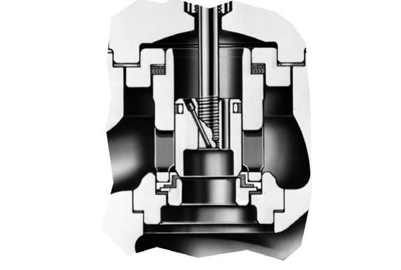

The Adapter Method for Reduced Capacity

1 2 3 4- 1Adapter piece — mates the smaller cage's OD to the larger body bore
- 2Cage — scaled from a smaller valve size
- 3Valve plug — scaled from a smaller valve size
- 4Seat ring & its own adapter piece — mates the smaller seat ring's OD to the larger body bore
After Control Valve Handbook, 6th ed., Fig. 3.42 — used directly. Component Index: cvh-cmp-adapter-reduced-flow-capacity.